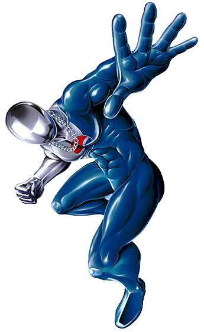

Welcome to the Pepsiman website.
Pepsiman is an official mascot for Pepsi in Japan.
Introduced in the 1990s, Pepsiman has been featured in several commercials and even has his own game on the PlayStation.
To learn more about Pepsiman's appearances, click on the Media button. To view Pepsi products, click on the Drinks button. To send me a message, click on the Contact button. To go back to this page, click on the Home button.
